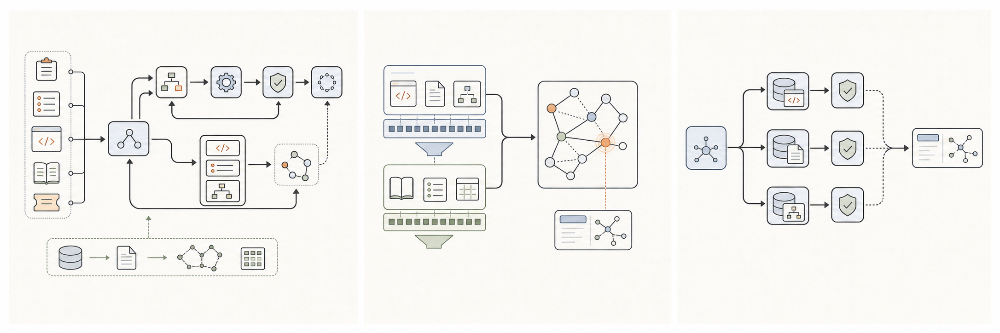

经历与项目
点击卡片查看详情
2022 — 2025浙江大学
电子信息 · 硕士 · 人工智能 / 计算机视觉
2018 — 2022北京科技大学
智能科学与技术 · 本科
01 / EDUCATION教育经历
从计算机视觉、小模型微调研究，逐步走向大模型 Agent 系统的研发与落地。
展开经历＋
浙江大学
电子信息 · 硕士 · 人工智能 / 计算机视觉
北京科技大学
智能科学与技术 · 本科
教育经历
从计算机视觉、小模型微调研究，逐步走向大模型 Agent 系统的研发与落地。
Research path
硕士期间研究人工智能与计算机视觉，完成医学图像处理方向 SCI 论文；本科阶段开展小模型微调研究并发表 SCI 论文。
这段训练形成了从问题定义、实验设计到结果验证的完整研究习惯，也成为后续构建 Agent 评测体系的基础。

02 / PRODUCTION AGENT出境订单排障 Agent
围绕异常假设动态取证，输出根因候选、证据链和处置建议。
查看项目＋

出境订单排障 Agent
围绕异常假设动态取证，输出根因候选、证据链和处置建议。
What I built
将订单、供应商请求与回调、调用链日志、错误码和历史工单封装为结构化只读 Tool，基于 LangGraph 实现 Router–Planner–Executor–Verifier–Synthesizer 闭环；证据不足时自动 replan。
从高质量排障记录与 gold hop 构造 ReAct 轨迹，先用 LoRA SFT 学习工具协议，再用 GRPO 优化工具选择、查询顺序和停止决策。
03 / AGENTIC SEARCH业务与代码知识库
以代码知识为核心、文档知识为指南的出境后端知识库。
查看项目＋
业务与代码知识库
以代码知识为核心、文档知识为指南的出境后端知识库。
Approach
使用 Elasticsearch 双索引（doc_index / chunk_index）分离精确匹配与语义理解，并基于 Agentic Search 完成代码仓库知识检索。
覆盖出境业务常见问题定位场景，准确率达到 80% 以上。
04 / MULTI-REPO SKILL跨仓需求调研 Skill
渐进式检索与主–子 Agent 分仓协作，形成可核验的代码证据链。
查看项目＋
跨仓需求调研 Skill
渐进式检索与主–子 Agent 分仓协作，形成可核验的代码证据链。
Approach
针对跨仓库需求调研耗时且易遗漏的问题，设计 L1→L2→L3 渐进式检索和主–子 Agent 分仓协作机制，完成需求关键词提炼与代码证据链构建。
跨仓分析准确率提升至 80% 以上，并缩短代码逻辑梳理时间。
 05 / RESEARCH
05 / RESEARCHMemoWorld
面向持续演化记忆架构的失败条件化 Memory World 生成方法。
查看研究＋
MemoWorld
面向持续演化记忆架构的失败条件化 Memory World 生成方法。
AAAI 2027
共同第一作者，在投。工作关注现有记忆控制器依赖固定任务流训练、容易产生“静态世界过拟合”的问题。
MemoWorld 将泛化单元从任务重新定义为记忆依赖模体，通过动态构造证据结构，训练智能体完成记忆写入、修订、分支与遗忘。
learn-workbuddy06 / OPEN SOURCElearn-workbuddy
从 Agent Loop、记忆与恢复，到权限、安全与审计的开源 Agent Harness。
查看贡献＋
learn-workbuddy
从 Agent Loop、记忆与恢复，到权限、安全与审计的开源 Agent Harness。
Core contributor
作为核心参与者，参与设计 Provider-neutral Agent Loop，统一 Anthropic、OpenAI Responses / Chat、DeepSeek 与 Offline Mock 的工具协议。
围绕长任务补齐 Session、Workspace Memory、JSONL 恢复和大工具输出外部化，并参与 Permission Gate、cwd 实路径约束、fail-closed 与 hash-chain Audit 建设。
在 GitHub 查看代码 ↗